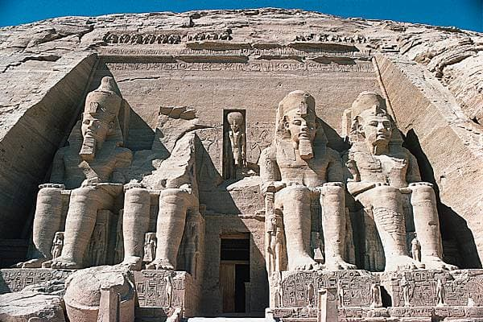

L'Égypte ancienne
L'Égypte antique est une ancienne civilisation de l'est de l'Afrique du Nord et de l'ouest du Moyen-Orient, concentrée le long du cours inférieur du Nil, dans ce qui constitue aujourd'hui l'Égypte. Ses frontières historiques furent partagées avec Canaan et l'Arabie à l'Est, la Libye à l'Ouest et la Nubie au Sud. La civilisation de l'Égypte antique prend forme autour de 3150 av. J.-C. avec l'unification politique de la Haute-Égypte au sud et de la Basse-Égypte au nord sous le règne du premier roi et se développe sur plus de trois millénaires. Son histoire est parsemée d'une série de périodes stables politiquement, entrecoupées de plusieurs périodes intermédiaires, plus troublées. L'Égypte antique atteint son apogée sous le Nouvel Empire puis entre dans une période de lent déclin. Le pays subit les assauts répétés de puissances étrangères dans cette période tardive et le règne des pharaons prend officiellement fin en -30, lorsque l'Empire romain conquiert l'Égypte pour en faire une province.
Le Moyen Empire
Le Moyen Empire est une période de l'histoire de l'Égypte antique qui suit la Première Période intermédiaire et précède la Deuxième Période intermédiaire. Il couvre une période allant des environs de 2033 à 1786 av. J.-C. Le Moyen Empire est une période de prospérité. La capitale est d'abord située à Thèbes, d'où sont originaires les rois de la XIe dynastie, puis à Itchtaouy au sud de Memphis. Les dieux principaux de l'époque sont Montou, le faucon belliqueux adoré à Erment, à Médamoud et à Thèbes, ainsi qu'Amon. La première construction thébaine a lieu sur la côte ouest de Thèbes, avec le temple funéraire de Montouhotep II bâti dans le cirque rocheux de Deir el-Bahari. C'est une période ouverte sur le Moyen-Orient, vers lequel de nombreuses expéditions sont envoyées. Les principaux souverains qui les conduisent sont les Sésostris et les Amenemhat. À cette époque sont construites les fondations du sanctuaire de Karnak, par Sésostris Ier ; les rois du Nouvel Empire les détruiront pour construire le Karnak actuel.

Le Nouvel Empire
Le Nouvel Empire est la période la plus prospère de toute l'histoire égyptienne après l'âge d'or connu dans l'Ancien Empire. C'est une période de raffinement et d'évolutions qui s'étale sur un peu plus de cinq siècles. L'initiateur en est Ahmôsis Ier, premier roi de cette époque. Chasseur des Hyksôs, il va mettre en place les fondations du Nouvel Empire en compagnie de sa mère Iâhhotep et de son épouse Ahmès-Néfertary. Le Nouvel Empire couvre une période allant d'environ -1500 à -1000, et est formé de trois dynasties : les XVIIIe, XIXe et XXe dynasties. Cette époque compte de nombreux personnages illustres : Ahmôsis Ier, Amenhotep, Thoutmôsis, Hatchepsout, Akhenaton, Toutânkhamon, Horemheb, Ramsès, Séthi, Taousert, Sethnakht. C'est la période la plus connue de l'histoire égyptienne, du fait de l'expansion territoriale égyptienne ; et surtout car elle comprend beaucoup de personnalités connues. C'est de cette époque que nous viennent les plus beaux témoignages architecturaux dont les « demeures des millions d'années », mais aussi des temples édifiés pour rendre un culte aux rois défunts en adorant leur Ka (temple de Louxor, tombe de Séthi Ier, Ramesséum, Abou Simbel, etc.). C'est une période très ouverte vers le monde extérieur, comme la Crète, les Hittites (ennemi un certain temps).

L'Égypte moderne
L'Égypte moderne est une fusion envoûtante de passé et de présent. Dans les rues animées du Caire, l'histoire millénaire se mêle à la vie contemporaine, avec ses marchés colorés et ses monuments imposants tels que les pyramides de Gizeh. Le long du majestueux Nil, la tranquillité des eaux laisse entrevoir des temples anciens et des paysages pittoresques, offrant un tableau enchanteur de l'héritage pharaonique. Cependant, l'Égypte moderne ne se résume pas à son histoire glorieuse. C'est aussi un pays en plein essor, avec une économie dynamique, une population jeune et une culture vibrante. Des quartiers artistiques du Caire aux plages de la mer Rouge, chaque coin du pays révèle une richesse et une diversité uniques, tout en conservant ses traditions et sa spiritualité ancrées. L'égypte moderne offre une expérience fascinante où les voyageurs peuvent découvrir l'harmonie entre le passé et le présent, entre les trésors anciens et les innovations contemporaines, dans un cadre envoûtant imprégné de mystère et de splendeur.